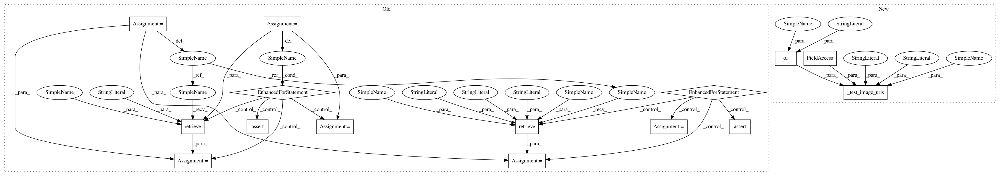

bd28ca3cb9f8e343780e8bb18792adb34bbbc446,tests/unit/sagemaker/image_uris/test_dlc_frameworks.py,,test_tensorflow_training,#Any#Any#,82
Before Change
def test_tensorflow_training(tensorflow_training_version, tensorflow_training_py_version):
for instance_type, processor in INSTANCE_TYPES_AND_PROCESSORS:
uri = image_uris.retrieve(
framework="tensorflow",
region=REGION,
version=tensorflow_training_version,
py_version=tensorflow_training_py_version,
instance_type=instance_type,
image_scope="training",
)
expected = _expected_tf_training_uri(
tensorflow_training_version, tensorflow_training_py_version, processor=processor
)
assert expected == uri
for region in SAGEMAKER_ALTERNATE_REGION_ACCOUNTS.keys():
uri = image_uris.retrieve(
framework="tensorflow",
region=region,
version=tensorflow_training_version,
py_version=tensorflow_training_py_version,
instance_type="ml.c4.xlarge",
image_scope="training",
)
expected = _expected_tf_training_uri(
tensorflow_training_version, tensorflow_training_py_version, region=region
)
assert expected == uri
def _expected_tf_training_uri(tf_training_version, py_version, processor="cpu", region=REGION):
version = Version(tf_training_version)
if version < Version("1.11"):
repo = "sagemaker-tensorflow"
After Change
def test_tensorflow_training(tensorflow_training_version, tensorflow_training_py_version):
expected_fn_args = {
"tf_training_version": tensorflow_training_version,
"py_version": tensorflow_training_py_version,
}
_test_image_uris(
"tensorflow",
tensorflow_training_version,
tensorflow_training_py_version,
"training",
_expected_tf_training_uri,
expected_fn_args,
)
def _expected_tf_training_uri(tf_training_version, py_version, processor="cpu", region=REGION):
version = Version(tf_training_version)
In pattern: SUPERPATTERN
Frequency: 3
Non-data size: 15
Instances
Project Name: aws/sagemaker-python-sdk
Commit Name: bd28ca3cb9f8e343780e8bb18792adb34bbbc446
Time: 2020-07-16
Author: 6631887+laurenyu@users.noreply.github.com
File Name: tests/unit/sagemaker/image_uris/test_dlc_frameworks.py
Class Name:
Method Name: test_tensorflow_training
Project Name: aws/sagemaker-python-sdk
Commit Name: bd28ca3cb9f8e343780e8bb18792adb34bbbc446
Time: 2020-07-16
Author: 6631887+laurenyu@users.noreply.github.com
File Name: tests/unit/sagemaker/image_uris/test_dlc_frameworks.py
Class Name:
Method Name: test_chainer
Project Name: aws/sagemaker-python-sdk
Commit Name: bd28ca3cb9f8e343780e8bb18792adb34bbbc446
Time: 2020-07-16
Author: 6631887+laurenyu@users.noreply.github.com
File Name: tests/unit/sagemaker/image_uris/test_dlc_frameworks.py
Class Name:
Method Name: test_tensorflow_inference
Project Name: aws/sagemaker-python-sdk
Commit Name: bd28ca3cb9f8e343780e8bb18792adb34bbbc446
Time: 2020-07-16
Author: 6631887+laurenyu@users.noreply.github.com
File Name: tests/unit/sagemaker/image_uris/test_dlc_frameworks.py
Class Name:
Method Name: test_tensorflow_training